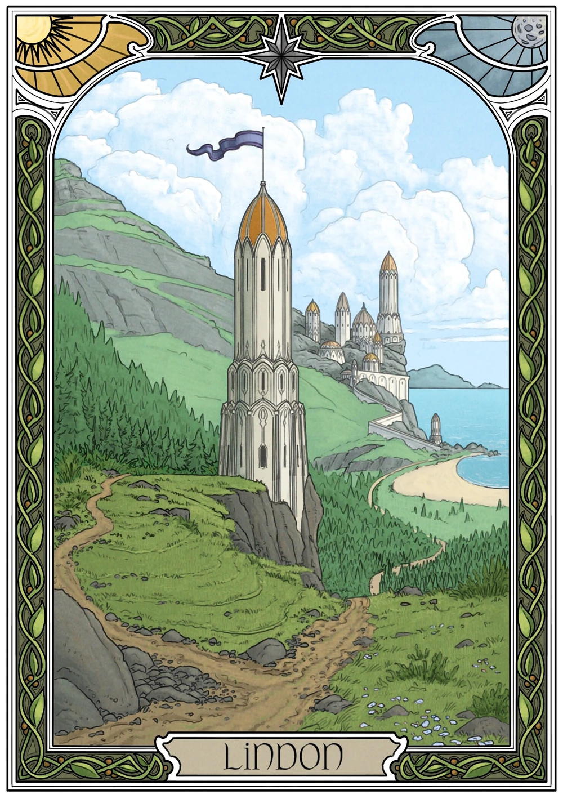

Lindon is located west of the Blue Mountains (which are west of the Shire).
It is located in what used to be Ossiriand, the only remaining land of Belariand after the end of the First Age in the War of Wrath
The Gulf of Lune formed, providing a bay for the elves to use to sail to Valinor
Lindon's eastern border is the River Lune, which seperates the elven realm from Arnor

History
Lindon was known as Ossiriand during the First Age, having been established by the Noldor elves after their exile from Valinor.
It was the only part of Belariand to survive the War of Wrath, where everything West was drowned under the changing of
the world and was founded in SA (Second Age) 1, with Gil-Galad ruling
THe types of elves in Lindon was Noldor and the Laiquendi, also known as the green elves
The Noldor dwelt in Forlindon, and the Sindar/Green Elves lived in Harlindon under Celeborn
In SA 32, some of the Sindar departed Lindon to swell with the Teleri elves, and in SA 700, Noldorin
elves departed to found Eregion, the second Noldorin realm
In SA 600, the Numenoreans made first contact with the Lindon elves and during the War of the Elves and Sauron, many elves fled to Lindon and then Valinor to escaspe Sauron. Tar-Minastir, the king of Numenor at the time
reinforced the Elven hosts and routed Saurons forces
When the Downfall of Numenor occured, Lindon lost more land to the sea, shrinking further.
After the War of the Last Alliance, the Telerin Elf Cirdan the Shipwright took leadership of the elven
nation, and took to building vessels so the elves could depart for valinor, being the last elf to leave once all others willing
to leave left for Valinor.